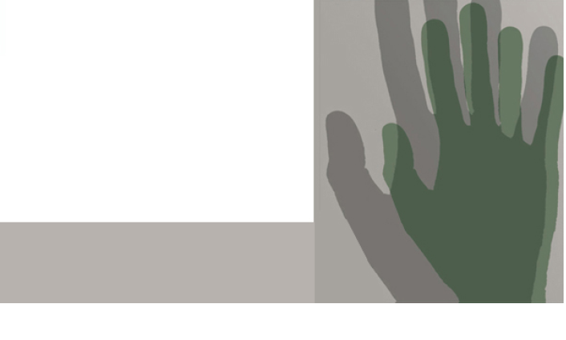

מבוא
כְּשֶׁסֻפַּר לָרִאשׁוֹנָה, שֶׁיְּדִידֵינוּ נִשְׁחָטִים בְּהַדְרָגָה
קָמָה זְעָקָה שֶל פַּלָּצוּת. אָז נִשְׁחֲטוּ מֵאָה. אֲבָל
כַּאֲשֶׁר נִשְׁחֲטוּ אֶלֶף וְלַשְּׁחִיטָה לֹא הָיָה סוֹף, נָפוֹצָה
הַשְּׁתִיקָה.
כְּשֶׁהָרֶשַׁע בָּא כְּמוֹ גֶשֶׁם נוֹפֵל, אִישׁ אֵינוֹ קוֹרֵא עוֹד:
עֲצֹר!
כְּשֶׁהַפְּשָׁעִים נֶעֱרָמִים, הֵם נַעֲשִׂים בִּלְתִּי-נִרְאִים.
כְּשֶׁהַסֵּבֶל נַעֲשֶׂה לְלֹא-נְשׂא, אֵין שׁוֹמְעִים
עוֹד אֶת הַצְּעָקוֹת.
גַּם הַצְּעָקוֹת נוֹפְלוֹת כְּגֶשֶׁם-קַיִץ.1
על שוויון ערך חיי האדם
ג'נוסייד (genocide) או השמדת עם הוא מקרה קיצוני של פגיעת בני אדם בבני אדם אחרים חפים מפשע על רקע של "אישום קיבוצי". ג'נוסייד הוא הפרה חד-משמעית וקיצונית ביותר של זכויות האדם הבסיסיות. מקרי השמדת המונים מלווים את ההיסטוריה האנושית לדורותיה, אך נראה שבמאה ה-02 בוצעו מעשים מסוג זה יותר מבכל מאה אחרת בהיסטוריה. היו שהגדירו את המאה הזאת "מאת הג'נוסייד", "מאת הרוע" או "מאת האלימות". במאה זו התרחשה גם השואה, שאפשר לראות בה את שיא הפגיעה בזכויות האדם והפגנה קיצונית של אדישות לסבלו של האחר.
אף על פי כן, מרבית בני האדם נוטים להתעלם מן התופעה ולהדחיק אותה. בתוכניות הלימוד ברמות השונות, לרבות במסגרות אקדמיות, אין כמעט התייחסות לנושא, אף שידע ומודעות הם תנאי הכרחי — אם כי לא תנאי מספיק — למאבק למניעת התרחשותם של מקרי רצח עם בעתיד. ידע ומודעות עשויים להיות הגורמים שימנעו את בני האדם מלרצוח, מלסייע לרוצחים או מלעמוד מנגד.
השואה היא מקרה הג'נוסייד הידוע ביותר וסביב השאלה אם היא דומה למקרי ג'נוסייד שהתרחשו בעמים אחרים מתנהלים ויכוחים נוקבים כבר יותר מעשרים וחמש שנים. השואה הייתה "תעשיית מוות", פרי אידיאולוגיה ותיאוריה שגרסו השמדת כל בני העם היהודי באשר הם. בכך ייחודיותה ובכך היא שונה מכל רצח עם אחר, וכך היא השתרשה בתודעה ההיסטורית שלנו כיהודים והיא ממלאה בה תפקיד מכריע. אך אל לנו להתעלם ממקרי רצח עם אחרים שהתרחשו למכביר במאה ה-02 ועדיין מתרחשים.
דווקא בישראל, התכחשות לקיומו של רצח עם (כל עם שהוא), אדישות כלפיו או התעלמות ממנו הן בנפשנו. אי-ההכרה בפשע שבוצע כלפי אדם או קבוצה היא גורם חשוב ביותר, ולרוב מרכזי, בתודעה האישית של הקורבנות ובהשקפת עולמם. אי-ההכרה היא לעתים אף גורם קריטי בתהליך התמודדותם של הקורבנות עם האסון ובניסיונות השיקום שלהם, העשויים להימשך זמן רב ולפעמים לנצח.
עלינו לדרוש מעצמנו תשובות לשאלות קשות, כגון כיצד אנו מתייחסים לדרישתם הצודקת של קורבנות אחרים שהרוצחים או יורשיהם יכירו במעשי הפשע שביצעו וכיצד אנו מסייעים להם בכך? כיצד אנו מתייחסים לתביעתם שהעולם יכיר בעוולה הכפולה שנעשתה להם — הג'נוסייד עצמו וההתעלמות ממנו אחריו? כיצד אנו מתייחסים לציפייתם שבייחוד אנו (במדינת ישראל) נכיר בעוולות שנעשו להם?
אחת ממטרות הקורס והספר היא אפוא לעורר את רגישותו של הסטודנט והקורא לתופעת הג'נוסייד, לגרום להתלבטות אצל הפרט בשאלות כגון עמדתו, אחריותו ואפשרות התגובה שלו ושל בני קבוצתו על מעשי עוול מסוג זה.
הגישה הבסיסית המנחה את הכנתו של הקורס שבמסגרתו נכתב ספר זה היא שוויון ערך חיי האדם באשר הוא אדם. בהקשר זה מובאים להלן דבריהם של הארכיבישוף דזמונד טוטו ושל שמעון ויזנטל.
הקדמה: מדוע חשוב ללמוד על השואה ועל הג'נוסייד של כל העמים?
ארכיבישוף אמריטוס דזמונד טוטו2
בדצמבר 5991, חמישים שנה לאחר סיום מלחמת העולם השנייה, ישבתי באותו האולם ממש שבו התקיימו משפטי נירנברג. השתתפתי בקבוצת דיון של רשת הטלוויזיה בי.בי.סי. על מורשת נירנברג. אחר כך ביקרתי באתר שבו עמד מחנה הריכוז הנאצי דכאו. נדמה שהגרמנים נחושים להבטיח שהאומה שלהם לעולם לא תשכח את הזוועות שבוצעו בשם האובססיה הארית של היטלר. בדכאו היה מוזיאון ומעל הכניסה אליו נחקקו המילים האלמותיות של ג'ורג' סַנְטַיאנָה: "מי ששוכחים את העבר נדונים לחזור עליו".
הסיבה המשכנעת ביותר ללימוד השואה ורצח עם שבוצע נגד כל עם אחר היא שבעקבותיו נתמלא בתחושת תיעוב גדולה כלפי מה שהתרחש; תחושה שתעורר אותנו לפעול כך שנבטיח שזוועות כאלו לא יישנו לעולם. לצערנו, נכונים דבריו של ציניקן, שאנו לומדים מההיסטוריה שאיננו לומדים מההיסטוריה. ייתכן שלוּ היה העולם מודע לרצח העם שביצעו העות'מאנים בארמנים, רצח העם הראשון במאה ה-02, הייתה האנושות ערנית יותר לסימני האזהרה שהופיעו לפני שטירופו של היטלר יצא לפועל בעולם שפקפק באפשרות שמעשים כאלו אכן נעשים. יש סימנים, שמי שעיניים בראשם יכולים להבחין בהם, הצריכים לגרום לנו לעמוד על המשמר. כאשר רודנים חשים חסרי ביטחון ומאוימים וכאשר זכויות הפרט נשחקות, החיישנים שלנו צריכים להיות רגישים במיוחד. בזמנים של שינויים מהירים או של מהפכה ותהפוכות כלכליות וחברתיות ובזמנים של אי-שקט פוליטי, בעלי השררה יחפשו על פי רוב את השעירים לעזאזל שעליהם יוכלו לטפול את האשמה לכל תחלואי החברה. לוּ היה לקח העבר נלמד, ייתכן שהיינו ערניים יותר לסימנים שהחלו להופיע בגרמניה של שנות השלושים.
אנו רוצים ללמוד על השואה ודוגמאות אחרות של רצח עם, כי תכופות סונוורנו מההישגים הטכנולוגיים היוצאים מן הכלל של החברה האנושית — טיסה בחלל, נחיתה על הירח, תקשורת במהירות האור. הישגים אלו גרמו לנו, אולי בצדק, לא רק להיות גאים, אלא גם להיות יהירים באופן בוטה, מאמינים בקדמה אוטומטית. מה שמביא אותנו לידי התפכחות היא העובדה שהקִדמה המוסרית שלנו איננה שוות ערך להישגינו הטכנולוגיים. אנו אינטליגנטים להפליא אך שיעור קומתנו המוסרית נמוך להפליא. אנו מוציאים סכומים שערורייתיים על תקציבי מוות והרס, כאשר חלקיק קטן של תקציבי ענק אלו היה יכול להבטיח שלילדים בכל העולם יהיה די מזון, גישה למים נקיים, שירותי רפואה הולמים וחינוך טוב בסביבה בטוחה. יש לנו היכולת להאכיל את כל אוכלוסיית העולם ואף אוכלוסייה גדולה ממנה, אבל ילדים מתים ברעב וממחלות הנגרמות מתזונה לקויה שקל למונען, ואילו אנו משליכים עודפי מזון כדי למנוע ירידה במחירי המזון. הדוגמאות של רצח עם ושל השואה הן תזכורות בוטות שיש לנו יכולת יוצאת דופן לרוע. מזעזעת במיוחד היא ההכרה שכמה מהמקרים האיומים ביותר בוצעו לא בידי פראי אדם נבערים, אלא בידי כמה מהמתוחכמים והמשכילים ביותר, הסבורים שהם נוצרים. עלינו לעצור לרגע לפני שאנו מנקים את עצמנו מאשמה — שכן מעשים אלו נעשו בידי בני אדם רגילים ונורמלים, ההוכחה האולטימטיבית לבנליות של הרוע.
אך בצד כל הדוגמאות האלה של רוע, יש דוגמאות נפלאות ליכולת האנושית לעשות טוב — דוגמאות יוצאות מן הכלל של אומץ, רוחב לב וטוּב לב. למדנו גם שאנו בעלי יכולת יוצאת דופן לעשות מעשים טובים, ויכולת זו עלינו לרתום למשימה להפוך את העולם למקום טוב יותר.
מעשי הזוועה צריכים לעורר בנו את החשק להתייחס לחיי אדם כיקרי ערך, כך שנסרב לשלול את אנושיותם אפילו של אויבינו. מה שמאפשר רצח עם הוא ראיית הקורבנות כמי שאינם בני אדם. באפריקה יש לנו דבר הנקרא "אוּבּוּנטוּ" (ubuntu), תמצית האנושיות, כאשר אנו מכירים בכך שהאנושיות שלנו כרוכה בזו של אחרים. אדם מוגדר כאדם באמצעות בני אדם אחרים. בני אדם נבראו לתלות הדדית, לאחווה ולהשלמה הדדית. רצח עם יכול להתרחש כי בני אדם אינם סובלניים כלפי השונה. "אובונטו" משבח את השונות. ההבדלים בינינו צריכים לגרום לנו להכיר בצורך שלנו זה בזה. אדם המלא בעצמו עד אפס מקום הוא תת-אנושי. "אובונטו" מבטא הסברת פנים, נדיבות, אכפתיות וחמלה.
כדאי לשים לב ללקח חשוב ביותר — בסופו של דבר, מי שאחראים לזוועות הללו נכשלים. זהו, בעצם, יקום מוסרי; לטוב ורע יש משמעות; ולרוע, תוקפני וחסר מעצורים ככל שהוא נראה, אין את המילה האחרונה. בסופו של דבר הטוב מנצח. היכן היטלר, אידי אמין, ז'אן בוֹקסָה, פינושה, פול פוט וחבריהם? העולם מגנה אותם. בסופו של דבר, העולם כיבד את האנשים הטובים. הטובים והצודקים — להם המילה האחרונה.
אנו לומדים על השואה ועל רצח העמים האחרים כדי שנוכל להיות אנושיים יותר, עדינים יותר, דואגים יותר, רחומים יותר, מעריכים כל אדם כבעל ערך אין-סופי, כה יקר ערך שאנו יודעים שזוועות כאלו לעולם לא יישנו, ושהעולם יהיה מקום אנושי יותר שיצא נגד מקרים נוראיים כאלו.
אנו נזכור זוועות אלו כדי שלא נעשה אותן שוב.
דזמונד טוטו מדגיש את חשיבות הזיכרון והתודעה ההיסטורית כאמצעי למניעת הישנותם של אירועי ג'נוסייד. האם תורמת האמונה התמימה, שהאדם אינו מסוגל לרוע גדול כל כך, להתרחשותם של אירועי ג'נוסייד? האם חוסר המעש של "העומדים מנגד" (כלומר מי שאינם הקורבנות ואינם המבצעים) נובע מאותה אמונה תמימה? האם היכרות עם אירועי ג'נוסייד שהתרחשו בעבר עשויה לנפץ אמונות תמימות שכאלה?
הקדמה: מדוע חשוב ללמוד על השואה ועל הג'נוסייד של כל העמים?
שמעון ויזנטל3
שנים רבות מאוד סברתי שבמובן החינוכי, הפוליטי והאנושי אנו, היהודים, לא הצלחנו להדגיש את העובדה שיחד אתנו, בזמן המשטר הנאצי, נרדפו וסבלו במחנות הריכוז אנשים משמונה-עשרה אומות אחרות.
מיד לאחר המלחמה חלמתי על מסגרת של "אחוות קורבנות" שתוכל להיות גם גוף לוחם נגד כל צורה חדשה — או ישנה — של נציונל-סוציאליזם. אחרי הכול, זו הייתה הפעם הראשונה זה 000,2 שנות היסטוריה של חיים משותפים שניצבנו מול אויב אחד. אך החמצנו את ההזדמנות, ממש כמו אותן אומות שבין פרקי ההיסטוריה שלהן אפשר למצוא פרקים המכונים "הזדמנויות שהוחמצו".
בשנות החמישים יצאתי בקריאה שלא לדבר תמיד רק על ששת המיליונים שנרצחו ולהתעלם מהיתר, כי זה צמצם את הנאציזם לבעיה יהודית ייחודית. אבל איש לא היה מוכן להקשיב לי. כשהסכמתי לתת את שמי למרכז שעמד לקום בלוס אנג'לס ב-7791, התנאי היחיד שלי היה שהמקום יוקדש לששת המיליונים ולעוד מיליונים רבים של בני אומות אחרות שסבלו יחד אתנו. אתם בוודאי יכולים לתאר לעצמכם כיצד בבת אחת קמו עלי אנשים מלאי שנאה שהאשימו אותי ברצון להמעיט בחשיבותה של השואה. ההסבר שלי שההדגשה שלא רק יהודים נפגעו רק תגדיל את האשמה הנאצית — לא התקבל. הוכחתי למבקרי, שבארצות הברית חיים יותר ניצולי מחנות ריכוז לא-יהודים מניצולים ממוצא יהודי, וכדי להילחם באנטישמיות, בנאציזם ובנטיות גזעניות אנו זקוקים לעזרתם של ניצולים אלו.
חשוב שלמדינת ישראל יהיו ידידים בעולם הזה. חברינו הנאמנים ביותר תמיד היו מי שסבלו יחד אתנו, ובהמשך גם ילדיהם. באירופה או בכל מקום אחר, ניסיתי להצביע על נקודות דמיון בינינו לבין ניצולים לא-יהודים. יש מדינות שבהן ארגוני הקורבנות אינם של יהודים בלבד, מדינות כמו הולנד, דנמרק, נורבגיה ואיטליה. ארגונים אלו בשום פנים אינם ממעיטים בערך הייחודיות של השואה היהודית, מכיוון שעניין זה אינו שנוי במחלוקת. אין די בהדגשת הייחודיות של השואה היהודית בלא חשיבה על העתיד, על מי שהיו ויישארו חברינו. נכון הוא שכאשר קמה דיקטטורה במדינה מסוימת, היהודים הם לעתים קרובות הקורבנות הראשונים, אבל אחריהם תמיד בא גם תורם של האחרים.
שמעון ויזנטל מדגיש את היתרונות הטמונים בהרחבת מעגל הזיכרון מהשואה לכלל אירועי הג'נוסייד שידעה האנושות כאמצעי ליצירת סולידריות של קורבנות. האם ההיכרות עם מגוון רחב של אירועי ג'נוסייד עשויה לתרום להכרה כי כל אחד יכול למצוא את עצמו יום אחד בעמדה של קורבן?
על הקורס ועל הספר
ספר זה הוא המבוא לקורס ג'נוסייד, והוא אחד בסדרה של שנים-עשר ספרים המתפרסמים במסגרת הקורס. למיטב ידיעתנו, זהו גם הספר הראשון המתפרסם בעברית על הג'נוסייד כחלק ממציאות חיינו כבני אדם. אנו מקווים שהוא יתרום, כמו שאר הספרים בסדרה (שגם הם יהיו, ברובם, הספרים הראשונים בעברית בתחומם), את תרומתו הצנועה להכלתה של סוגיית הג'נוסייד בתודעת החברה הישראלית.
בספר זה נתוודע תחילה למונח "ג'נוסייד" (רצח עם, השמדת עם), לנסיבות היווצרותו ולקשיים הנלווים להגדרתו ונלמד הגדרות וטיפולוגיות שונות הקשורות בו. אחר כך נדון בקשר ובהבחנה בין המונח "שואה" למונח "ג'נוסייד" ובינו לבין המונח "דמוסייד" (democide). בהמשך נעסוק באמנת האו"ם (8491) בדבר מניעתו וענישתו של פשע השמדת עם — ברקע ובנסיבות שהוליכו לניסוח אמנה זו ובוויכוח שהתחולל סביבה. בהקשר הישראלי נעסוק בחוק הכנסת בדבר מניעתו וענישתו של פשע השמדת עם (0591) וכן בחוק לעשיית דין בנאצים ובעוזריהם. במהלך הספר נבהיר בקצרה מושגים אחדים מתחום מדעי החברה העשויים לסייע בהבנת הרקע החברתי-התרבותי העלול להצמיח את מעשי הג'נוסייד, כגון גזענות, אפליה, דעות קדומות, מיעוטים ועוד, ונעמוד גם על פשעים כמו רצח המוני, טבח, פוגרום, טיהור אתני ועוד, שאינם זהים — על פי הגדרתם — לג'נוסייד.
נקודת המבט שממנה בוחן הקורס את תופעת הג'נוסייד היא זו של הגישה הרב-תחומית (אינטרדיסציפלינרית). התפיסה המנחה אותנו היא שמעשי רצח עם היו אירועים היסטוריים, מעשי ידי בני אדם, שיש לבחון אותם על רקע של מציאות פוליטית, חברתית, תרבותית ועוד. ננסה לעמוד על משמעותם באמצעות מחקרים, גישות וכלים מתחומי דעת שונים, כמו היסטוריה, סוציולוגיה, מדעי המדינה, יחסים בין-לאומיים, תקשורת, פסיכולוגיה ועוד.
מבנה הקורס
כאמור, הקורס ג'נוסייד מבוסס על סדרה של שנים-עשר ספרים; כל אחד מהספרים הללו הוא חלק מהמכלול השלם, אך גם עומד בפני עצמו. כדי להקל על קורא שאינו לומד את הקורס כולו, החלטנו לצרף לכל אחד מהספרים העוסקים במקרי ג'נוסייד ייחודיים מבוא קצר ובו מושגים ומונחים מרכזיים הנוגעים לתופעת הג'נוסייד, שהם ממרכיבי השפה המשותפת לכל הקורס, בצד התייחסות למקרה הג'נוסייד הנדון.
בספר השני במסגרת הקורס נסקור בקצרה מעשי ג'נוסייד אחדים שהתרחשו בעת העתיקה, בימי הביניים ובראשית העת החדשה ועוד מעשי ג'נוסייד אחדים שלא נוכל לעסוק בהם בספרים נפרדים בשל קוצר היריעה. בספרים האחרים נעסוק בנושאים האלה: ג'נוסייד בידי משטרים קולוניאליים: השמדת האינדיאנים באמריקה הצפונית והדרומית; ג'נוסייד הארמנים; השואה בהקשר של מעשי ג'נוסייד; ג'נוסייד הצוענים; טיבט — ג'נוסייד או ג'נוסייד תרבותי?; "הטרור האדום" והטיהורים האתניים בתקופת סטלין בברית המועצות; הג'נוסייד ברואנדה; "הומו ג'נוסיידר" — המרכיבים הנפשיים של האדם הרוצח; המסייעים, המצילים, "חסידי אומות העולם"; האם אפשר למנוע ג'נוסייד?
מטרות הקורס
בקורס שני סוגים של ספרים: סוג אחד עוסק בסוגיות כלליות בנושא הג'נוסייד והסוג האחר עוסק במעשי ג'נוסייד ייחודיים. מטרת כל אחד מהספרים בקורס היא להציג לפני הסטודנטים והקוראים את ההקשר ההיסטורי-החברתי (במשמעות הרחבה של מדעי החברה) שבו התרחשו מעשי הג'נוסייד הנדונים בו; בתוך כך, הם יתוודעו לאירועים, יכירו את המשתתפים בהם, יעמדו על הסיבות (העובדתיות והמומצאות) למעשים ועל תוצאותיהם ויוכלו לנתח את המשמעויות וההשלכות השונות שלהם על הפרט ועל החברה.
חוקרים ואנשי מדע רבים נחלקים לעתים בדעותיהם על פרשנותם של מאורעות היסטוריים; אנו נשתדל להציג לפני הלומדים והקוראים את העמדות השונות — לעתים הקוטביות.
מעשי הג'נוסייד הייחודיים שייבחנו בספרי הקורס השונים יוצגו לרוב על פי הקווים המנחים האלה (אם כי לא תמיד באותו הסדר):
מבוא ורקע כללי לתופעת הג'נוסייד.
המעורבים בביצוע הג'נוסייד (מדינה, מוסדות חברתיים, עמים וקבוצות אתניות שונות, פרטים וקבוצות בעלות אפיונים ייחודיים).
מבצעי הג'נוסייד.
קורבנות הג'נוסייד.
האופן שבו בוצעו מעשי ההשמדה.
הגורמים שהניעו את הרוצחים לבצע את מעשיהם.
התהליכים, הזרמים והכוחות ההיסטוריים שהובילו לג'נוסייד.
השפעתו לטווח ארוך של הג'נוסייד על קבוצת הקורבנות.
תגובתם של יחידים, של קבוצות ושל עמים אחרים ("שאר העולם") על הג'נוסייד.
מידת ההסכמה בין אנשי המחקר לפרשנות של הג'נוסייד (במה שנוגע לתנאים המוקדמים, להוצאה לפועל, לתוצאה).
האם קיימת או התקיימה תופעה של הכחשת עצם קיומו של הג'נוסייד?
האם קיימת כיום ידיעה ומודעות לאותו מקרה של ג'נוסייד?
תרומת המחקר הנוגע לג'נוסייד הנדון לתחום לימודי הג'נוסייד בכלל.
מה הם הלקחים שאפשר להפיק ממעשה הג'נוסייד הנדון.
האם אפשר ללמוד ממעשה הג'נוסייד הנדון משהו העשוי לצמצם את אפשרויות הישנותם של מעשים מעין אלה בעתיד? אם כן — מה עלינו לעשות לשם כך?
הערות על הוראת הג'נוסייד בעולם
שאלות פילוסופיות ודידקטיות חשובות עולות בקשר לסוגיות הנוגעות להוראת הג'נוסייד. את השאלה הנוקבת שהעלה אלי ויזל בנוגע להוראת השואה אפשר ליישם, כפי שהיא, גם להוראת הג'נוסייד:
איך נלמד על מאורעות המנוגדים לידע, על התנסויות המרחיקות אל מעבר להיגיון? איך נספר לילדים, קטנים וגדולים, שחברה יכולה לאבד את שפיות דעתה ולהתחיל לרצוח את נשמתה ואת עתידה? איך נחשוף את הזוועות בלי להציע, בה בעת, מידה מסוימת של תקווה? תקווה במה? במי? בקדמה, במדע, בספרות, באלוהים?4
הוראת השואה כבר קנתה לעצמה מעמד יציב במסגרות לימודיות וחינוכיות שונות בארצות רבות בעולם, אך התחום הכללי של הוראת הג'נוסייד כנושא בפני עצמו עדיין נתון בראשית התפתחותו. אפשר לקבוע בוודאות, כי באופן כללי, ברוב מדינות העולם, הידע על מקרי ג'נוסייד שהתרחשו במאה ה-02 פחוּת כנראה בהרבה מהידע על השואה. יש אף הטוענים, שבמובנים רבים אפשר לראות ברוב מעשי הג'נוסייד במאה ה-02 (לבד מן השואה), לא כל שכן אלה שהתרחשו בעבר הרחוק יותר, "מעשי ג'נוסייד נשכחים", ולעתים אף "מעשי ג'נוסייד מוסתרים".
עם זה, אין ספק שבעשרים או בשלושים השנים האחרונות חלה במדינות רבות בעולם התקדמות של ממש במודעות לתופעת הג'נוסייד, ובמקביל — התקדמות מסוימת, אם כי עדיין מצומצמת, בהוראת הנושא (חוץ מהוראת השואה). מעקב מקרוב אחר התפתחות הוראת הג'נוסייד במדינות שונות מלמד, שבמקרים לא מועטים מניעים אותה יוזמה ומאבקים של "משוגעים לדבר", שאינם מרפים מן הנושא. אין זה מקרי שמאחורי רבים מהמאבקים ומהיוזמות בתחום עומדים יהודים המבקשים לפתח את חקר הג'נוסייד והוראתו, בצד חקר השואה והוראתה, מתוך הזדהותם המיוחדת, כקורבנות, עם סבלם של עמים אחרים. הללו סבורים שמחקרים משווים (comparative studies או genocide studies), לבד מעצם תרומתם לחקר הג'נוסייד, עשויים לסייע גם לחקר השואה מנקודות מבט שונות שחקר השואה לבדו אינו מאפשרן ואנו שותפים לסברה זו.
הוראת הג'נוסייד בישראל — תמונת מצב
מעט מאוד ספרים העוסקים בתופעת הג'נוסייד או במקרי ג'נוסייד מסוימים התפרסמו בארץ. מצב זה — לעומת שפע הפרסומים לגוניהם השונים, בעברית ובתרגום לעברית, העוסקים בשואה (תופעה מבורכת כשלעצמה) — מעלה תהיות.
בעיצוב התודעה ההיסטורית — מעבר ליסודות הרציונליים הבאים לידי ביטוי גם במחקר ההיסטורי, שתפקידו לחשוף את האמת ההיסטורית — פועלים גם יסודות רגשיים, לעתים לא רציונליים, מודעים ולא מודעים. אמת היסטורית, מחקר היסטורי ותודעה היסטורית אינם היינו הך. תפקידם של המחקר ושל החינוך הוא לנסות להשפיע על עיצוב התודעה ההיסטורית. החוקר והמחנך אמורים להיות בין הגורמים המעצבים את התודעה ההיסטורית של חברתם, בצד המערכת השלטונית, אמצעי התקשורת, אינטרסים מאינטרסים שונים של החברה או של תת-קבוצות בה ועוד.5 לפיכך, הידיעה והמודעות, ההוראה והחינוך בנושא הג'נוסייד הם תנאי הכרחי, אם כי לא תנאי מספיק, למאבק נגד התרחשות מעשי ג'נוסייד בעתיד.
אפשר להצביע על שתי גישות עיקריות בנוגע לשאלה אם יש לעסוק בהוראת הג'נוסייד בישראל וכיצד: הגישה האחת גורסת, כי אין ללמד נושא זה כלל ויש להתרכז בהוראת השואה בלבד; הגישה האחרת גורסת, כי יש ללמוד את הנושא, אך בהפרדה מוחלטת בינו לבין השואה. לעומת שתי גישות מבדילות אלו, אנו מציעים לעסוק בהוראת השואה והג'נוסייד בכפיפה אחת.
בתוכניות הלימוד בישראל לא הייתה עד כה כמעט כל התייחסות לסוגיית הג'נוסייד. משרד החינוך לא אישר את תוכנית הלימוד רגישות לסבל בעולם: השמדת-עם במאה ה-02, שהוכנה בעבורו בשנת 4991.6 בשנים האחרונות נלמדת התוכנית, בחלקה או בשלמותה, בכמה בתי ספר תיכוניים, ביוזמתם הפרטית של מורים ומנהלים שחשבו שמן הראוי ללמדה. גם במסגרות ההוראה האוניברסיטאיות כמעט אין לומדים על הג'נוסייד כתופעה כללית ועל מקרי ג'נוסייד ייחודיים כנושאים בפני עצמם, ונראה שרק לעתים רחוקות הם מוזכרים בהקשרים כלשהם.7
אין תמה אפוא שמידת הבורות בארץ בכל הנוגע למקרי ג'נוסייד שאירעו לעמים אחרים רבה מאוד. כך, לדוגמה, בשנת 6991 נערך סקר בקרב יותר משמונה מאות סטודנטים לתואר ראשון הלומדים בשבע אוניברסיטאות ומכללות. בסקר זה התבקשו הנשאלים להגדיר את מידת הידע שלהם על מקרי הג'נוסייד בארמנים ובצוענים. נמצא, כי הסטודנטים אינם יודעים כמעט דבר על ההתרחשויות האלה. באותו מחקר נשאלו הסטודנטים אם עקבו אחרי שני מעשי הג'נוסייד שהתרחשו כשנתיים או שלוש לפני הסקר (כשהנשאלים כבר היו לאחר סיום לימודי התיכון שלהם) ברואנדה וביוגוסלביה לשעבר. רובם העידו שלא עשו זאת.
יְמֵי-הַבֵּינַיִם מִתְקָרְבִים!... / זלמן שניאור
...הֲשָׁמַע לְבַבְכֶם בַּלַּיְלָה
הֵד מַתְמִיד וְרָחוֹק וָרָע, צִפָּרְנַיִם מְגָרְדוֹת בַּמַּחְשָׁךְ? —
זֶה תַּנִּין יְמֵי-הַבֵּינַיִם מִתְהַפֵּךְ לְנַשֵּׁל קְלִפָּתוֹ.
עִם בּוֹא תּוֹר-הַתְּחִיָּה הִתְחַלְחֵַל, הִתְקַפֵּל וַיִּישַׁן שְׁנַת-מָוֶת,
[...]
אַךְ עַתָּה כְּבָר גָּמֵל דַּיֵּהוּ בְּעוֹרוֹ הַיָּשָׁן. הִכּוֹנוּ!
עוֹד מְעַט וִיפוֹצֵץ הַקְּלִפָּה שֶׁעָלוּ בָהּ גַּנִּים וּכְרַכִּים,
וְנַתֵּק אֲסוּרֵי-הַתַּרְבּוּת וְהָיוּ כִּנְעֹרֶת חֲרוּכָה;
וּמְגִלּוֹת-הָאַהֲבָה לָאָדָם וְדִגְלֵי הַדְּרוֹר הַמִּנַּפְנְפִים
יִתְפַּזְּרוּ לְכָל הָעֲבָרִים כְּצַעֲצוּעֵי-יְלָדִים בַּסְּעָרָה.
וְיָצָא מִבֵּין הֶחֳרָבוֹת עֲנַק-הַבֵּינַיִם הַזָּעוּם,
וְהוּא גָדוֹל וְעַז מִשֶּׁהָיָה! אֵשׁ-חַשְׁמַל בִּתְהוֹמוֹת עַפְעַפָּיו
וְעוֹרוֹ מְסֻמַּר כִּידוֹנִים וְקִיטוֹר מְפַעְפֵּעַ בִּגְרוֹנוֹ,
וּבָתֵּי-חֲרשֶׁת עֲשֵׁנִים מִנְּחִירָיו הַנְּפוּחִים בְּרֶצַח,
וּנְשִׁימָה לוֹ קְטוּעָה וְרֵיחָהּ כְּרֵיחַ הַנֵּפְט הַמִּתְלַקַּח.
וְאֵיפֹה תִּבָּקַע בֵּיצָתוֹ הַגְּדוֹלָה כְּכַדּוּר-הָאָרֶץ —
לֹא נֵדַע, לא נַחְקֹר...
מַה בֶּצַע כִּי יֵדַע עַם פָּזוּר בְּרַחֲבֵי זוֹ אָרֶץ?
גַּם פֹּה וְגַם שָׁם יִדְבְּקֶנּוּ הָאָסוֹן רִאשׁוֹנָה...
יְמֵי-הַבֵּינַיִם מִתְקָרְבִים!8

פסיפס תמונות של קורבנות השואה במוזיאון השואה בוושינגטון, ארצות הברית.
1 קטע משירו של ברטולד ברכט, "כשהרשע בא כמו גשם נופל", מתוך: גלות המשוררים, מבחר שירים 4191-6591, תרגום: ה' בנימין, תל-אביב: ספרי סימן קריאה, הוצאת הקיבוץ המאוחד, 8791.
2 Desmond M. Tutu, "Foreword: Why Is It Important to Learn about the Holocaust and the Genocides of All People?" in: Israel W. Charny (ed.), Encyclopedia of Genocide, Santa Barbara: ABC-CLIO,1999, pp. lvii-lviii. תרגום: זהר לביא. דזמונד טוטו נולד ב-1391 בטרנסוול ולמד תיאולוגיה באנגליה. ב-8791 התמנה לארכיבישוף השחור של דרום אפריקה. פעיל נחרץ למען שוויון בין-גזעי בדרום אפריקה ובמקומות אחרים. חתן פרס נובל לשלום לשנת 4891.
3 Simon Wiesental, "Foreword: Why Is It Important to Learn about the Holocaust and the Genocides of All People?" in: Charny (ed.), Encyclopedia of Genocide, p. lix. תרגום: זהר לביא. שמעון ויזנטל נולד באוקראינה של היום ב-8091 ונפטר באוסטריה ב-5002. במלחמת העולם השנייה נמלט שוב ושוב מציפורני הנאצים. לקראת סופה של המלחמה ואחריה החל לאסוף מידע על זוועות הנאצים בעבור משרד ההגנה האמריקני. משנות החמישים של המאה ה-02 התמסר למצוד אחר פושעים נאצים בשאיפה שהצדק ייעשה והפושעים יבואו על עונשם. הוא פרסם כמה ספרים בנושא השואה והקים כמה ארכיונים ומוזיאונים לזכר השואה.
4 Elie Wiesel, "Then and Now: The Experiences of a Teacher", Social Education 42, 4 (1978), pp. 266-271
5 לנושא זה ראו: איל נווה ואסתר יוגב, היסטוריות, תל-אביב: בבל, 2002.
6 יאיר אורון, רגישות לסבל בעולם: השמדת-עם במאה ה-02, תל-אביב: מכללת סמינר הקיבוצים, 4991.
7 משנת 1002 נלמד הקורס מכאוב הדעת — סוגיות בהוראת השואה והג'נוסייד, במסגרת לימודי דמוקרטיה לתואר M.A. באוניברסיטה הפתוחה.
8 קטע משירו של זלמן שניאור, "ימי-הבינים מתקרבים", מתוך: ז' שניאור, שירים, תרס"א-תש"ה, תל-אביב: עם עובד, תשי"א, עמודים קסד-קסה. השיר נכתב בשנת תרע"ג (4191).